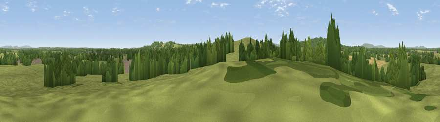

Viewpoint near Adversane
#36872 in England · top 58% of its area beats it · near AdversaneWhere it is
The exact computed spot (TQ 05225 22125). Click the marker for map links.
The view, rendered

A 360° render of this exact spot computed from the terrain model, tree cover and land cover — summer colours, afternoon light, calibrated against photographs of famous viewpoints. Real trees, hedges and buildings will differ in detail.
The panorama
Grey silhouette: terrain skyline in each direction (720 bearings, Earth curvature and refraction included). Dashed green: skyline with trees (+15 m) and buildings (+8 m) as obstacles. Blue strip: how far the ground is visible on each bearing.
Where the view opens
Wedge length = distance to the farthest visible ground on that bearing (vegetation-aware). Rings at 10, 25 and 50 km.
What fills the view
70% grassland · 23% woodland · 6% cropland · 2% built-up
Angular shares of the visible panorama (visual magnitude), not map area. Landscape diversity 0.36 (0–1 Shannon).
Key numbers
More beautiful places nearby
The staircase of upgrades: each row has a higher view potential than everything closer. Driving times are estimates from straight-line distance, calibrated against real road routing — check an actual route before setting out.
| Place | Direction | Drive | Score |
|---|---|---|---|
| Toat Hill | SSW · 1 km | ~2 min | 50.1 |
| Viewpoint near Stopham | W · 3 km | ~8 min | 65.4 |
| Viewpoint near Amberley | S · 10 km | ~19 min | 82.3 |
| Viewpoint near Storrington | SSE · 10 km | ~19 min | 83.9 |
| Westburton Hill | SSW · 11 km | ~21 min | 84.2 |
| Bignor Hill | SW · 11 km | ~21 min | 84.4 |
| Viewpoint near Washington | SE · 13 km | ~24 min | 85.0 |
| Chanctonbury Ring | SE · 13 km | ~24 min | 87.0 |
50.98892, -0.50216 · source: screening · position refined by local search. Computed location — check access rights before visiting.